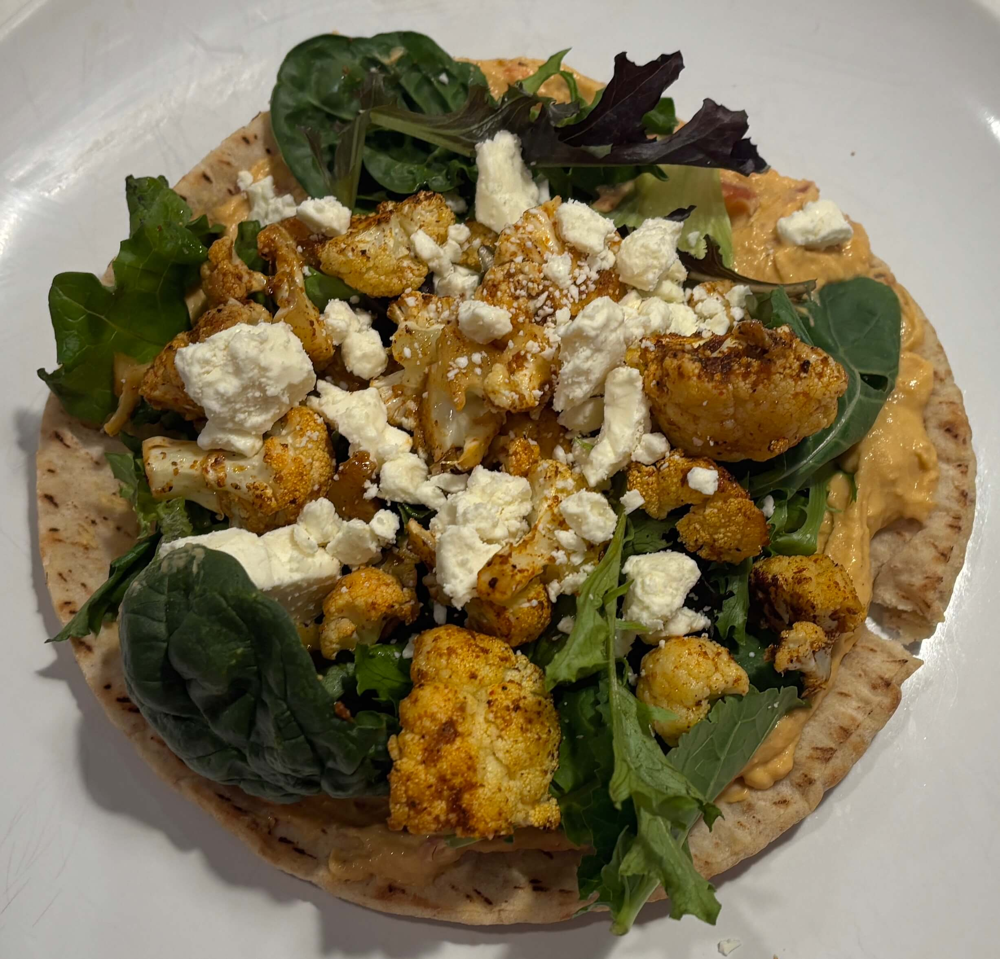

Home
Roasted Cauliflower Pitas

4-6 servings
Ingredients
- 1 head cauliflower, chopped into florets
- 1 tablespoon olive oil
- 1 teaspoon chipotle chili powder
- 1/2 teaspoon garlic powder
- ¼ teaspoon smoked paprika
- kosher salt and pepper
- 4 to 6 pita breads
- 1 cup hummus, for spreading on pitas
- ½ cup crumbled feta cheese
- a few handfuls of spring greens for topping
Steps
- Note: if you want to make the homemade pitas, do those first. You can even make them ahead of time.
- Preheat the oven to 425 degrees F.
- Place the cauliflower florets on a baking sheet. Drizzle with the olive oil and toss well. In a bowl, stir together the chili powder, paprika, garlic powder, salt and pepper. Sprinkle all over the cauliflower and toss until combined. Roast for 20 to 25 minutes, tossing once during cook time.
- To assemble the pitas, spread about ¼ cup hummus (or however much you'd like) on the pita bread. Add a few spoonfuls of the cauliflower on top. Sprinkle with feta and top with a handful of spring greens. Serve